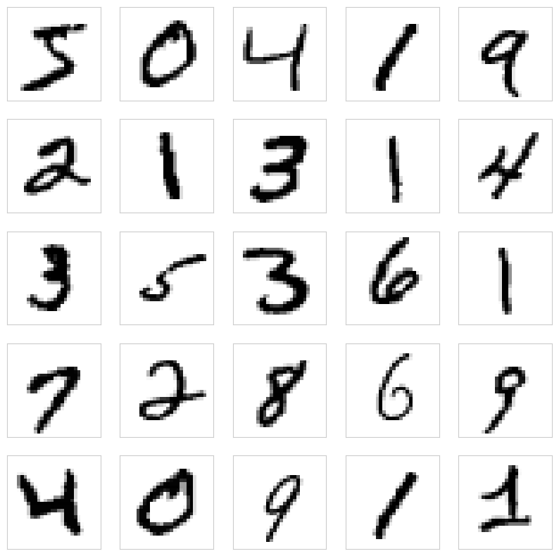
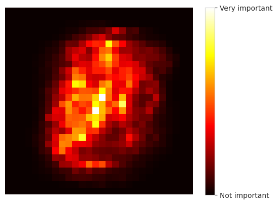
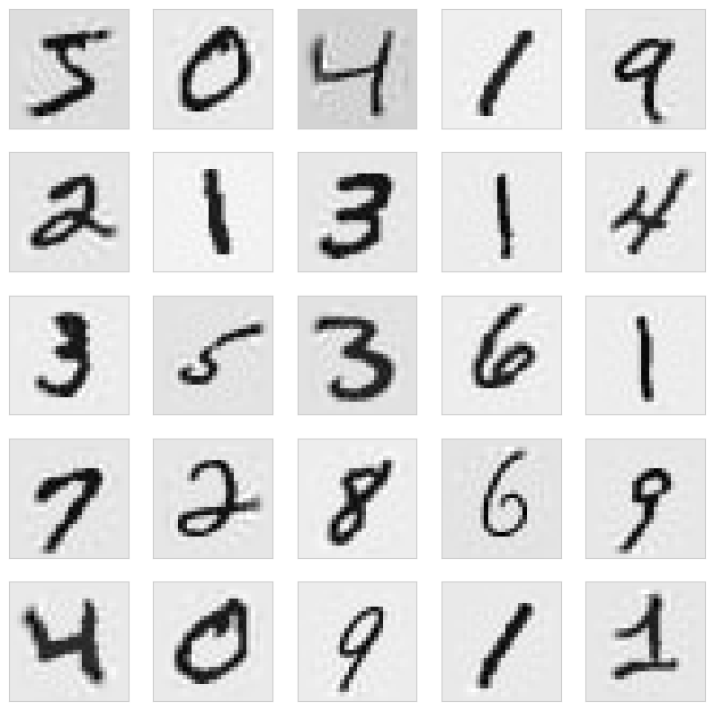
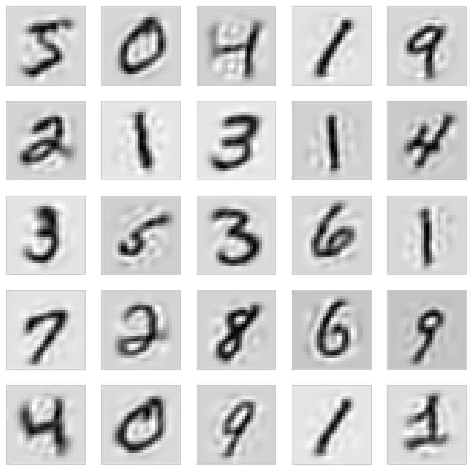
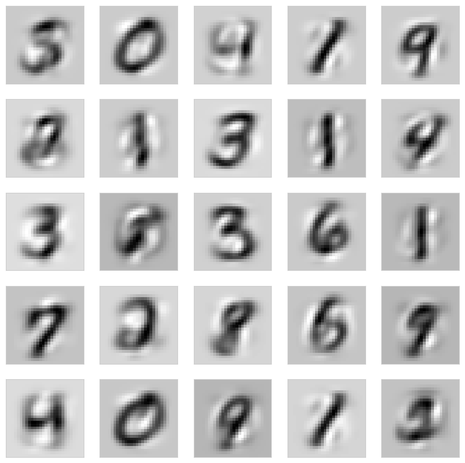

Réduction de dimensions#
Pourquoi réduire la dimensionnalité ?#
Une feature, c’est une colonne. Un dataset avec 10 features est facile à manipuler. Un dataset avec 10 000 features (images, textes, logs bruts…) devient beaucoup plus compliqué. Au-delà d’un certain seuil, ajouter des features dégrade les performances plutôt que de les améliorer. C’est contre-intuitif — et c’est au cœur de ce notebook.
Les trois problèmes d’avoir trop de features#
Temps d’apprentissage long. Plus il y a de features, plus les calculs sont lourds. Un modèle qui prendrait 1 minute sur 10 features peut prendre des heures sur 10 000.
Convergence difficile. Beaucoup d’algorithmes ont du mal à « trouver » la bonne solution quand l’espace est trop grand. Le bruit noie le signal.
Impossible à visualiser. On sait dessiner des scatter plots en 2D ou 3D. Au-delà, on ne « voit » plus les données — on perd l’intuition visuelle qui est cruciale en EDA.
La malédiction de la dimensionnalité#
Ce phénomène a un nom : la curse of dimensionality. L’idée est simple : en haute dimension, les données deviennent « clairsemées » de manière dramatique, même si on en a beaucoup.
L’analogie à garder en tête : imagine qu’on te demande de remplir un petit cube de 1 m × 1 m × 1 m avec des boules distantes de 10 cm. Il t’en faut environ 1000. Maintenant, on te demande de faire la même chose dans un hypercube en 4 dimensions. Puis en 10. Puis en 100. Le nombre de boules explose exponentiellement — en 10 dimensions, il t’en faut déjà \(10^{10}\) = 10 milliards.
Conséquence en ML : au lieu d’être entourée de voisins proches (ce qui est le principe de base du machine learning — « les points qui se ressemblent ont tendance à avoir la même étiquette »), une donnée se retrouve loin de tout le monde. La notion même de « voisinage » perd son sens. KNN, K-Means, SVM… tous ces algorithmes basés sur la distance commencent à patiner.
Le calcul qui fait peur#
Si on veut avoir des points espacés de 0,01 (= \(10^{-2}\)) dans un hypercube de côté 1 :
Dimension |
Nombre de points nécessaires |
|---|---|
1 (segment) |
\(10^2\) = 100 |
2 (carré) |
\(10^4\) = 10 000 |
3 (cube) |
\(10^6\) = 1 million |
10 |
\(10^{20}\) |
100 |
\(10^{200}\) (plus que d’atomes dans l’univers) |
Conséquence pratique : une nouvelle donnée risque de se trouver très loin des autres → difficile à classifier → comme si on avait un dataset insuffisant, même avec des millions d’exemples.
Le phénomène de Hughes#
La performance d’un classifieur en fonction du nombre de features suit une courbe en cloche, connue sous le nom de phénomène de Hughes :
Peu de features → le modèle sous-apprend (pas assez d’information).
Nombre optimal → le modèle apprend le signal.
Trop de features → la malédiction de la dimensionnalité frappe : le modèle apprend du bruit, sa performance dégringole.

🎯 Conclusion : plus n’est pas toujours mieux. Parfois, supprimer des features améliore les performances — en éliminant du bruit, en simplifiant le problème, en rapprochant les données les unes des autres. C’est ce que fait la réduction de dimensions.
Le plan de ce notebook#
Identifier les features inutiles (illustration sur MNIST avec
feature_importances_).PCA (Principal Component Analysis) — la technique reine de réduction de dimensions.
Mesurer l’impact de la PCA sur la performance d’un modèle.
Manifold learning — pour les cas où la PCA ne suffit pas.
Features « inutiles »#
Prenons un exemple visuel. Les images MNIST (chiffres manuscrits) sont des matrices 28×28 = 784 pixels. Mais est-ce que les 784 pixels sont tous utiles pour reconnaître un chiffre ?
Intuition rapide : les pixels aux coins et sur les bords sont presque toujours noirs (vides), quelle que soit l’image. Ils n’apportent aucune information pour distinguer un 3 d’un 8. Seuls les pixels du centre contiennent vraiment le signal.
Le principe général : dans de nombreux datasets, beaucoup de features apportent peu ou pas d’information. Certaines sont constantes, d’autres redondantes, d’autres purement bruit. Les identifier et les supprimer améliore typiquement à la fois la vitesse et la performance du modèle.
import numpy as np
import matplotlib.pyplot as plt
import seaborn as sns
import pandas as pd
sns.set_style('whitegrid')
from sklearn.datasets import fetch_openml
mnist = fetch_openml('mnist_784', version=1, parser="auto")
X = mnist.data.values
y = mnist.target.astype(np.uint8)
# mnist_csv = pd.read_csv("../../data/mnist.csv")
# X = mnist_csv.drop("class", axis=1).values
# y = mnist_csv["class"]
def display_digits(X):
plt.figure(figsize=(10,10))
for i in range(25):
plt.subplot(5, 5, i+1)
plt.xticks([])
plt.yticks([])
plt.grid(False)
digit = X[i].reshape(28, 28)
plt.imshow(digit, cmap=plt.cm.binary)
plt.show()
X
array([[0, 0, 0, ..., 0, 0, 0],
[0, 0, 0, ..., 0, 0, 0],
[0, 0, 0, ..., 0, 0, 0],
...,
[0, 0, 0, ..., 0, 0, 0],
[0, 0, 0, ..., 0, 0, 0],
[0, 0, 0, ..., 0, 0, 0]])
display_digits(X)

Intuition confirmée visuellement : les pixels périphériques sont presque toujours noirs et n’apportent rien à la classification.
Quantifier l’importance avec feature_importances_#
On va le confirmer algorithmiquement en utilisant un RandomForestClassifier, qui fournit gratuitement un ordre d’importance des features via son attribut feature_importances_.
Comment ça marche ? Pour chaque feature, le Random Forest mesure à quel point elle est utilisée par les arbres pour séparer les classes. Une feature utilisée souvent et haut dans les arbres → importance élevée. Une feature jamais utilisée (ou rarement) → importance faible.
Le résultat est un vecteur qui, pour MNIST, se transforme en une carte thermique 28×28 montrant quels pixels comptent vraiment. On va voir qu’elle ressemble à une « auréole » concentrée au centre — exactement là où les chiffres sont dessinés.
from sklearn.ensemble import RandomForestClassifier
rnd_clf = RandomForestClassifier(n_estimators=100, n_jobs=-1, random_state=42)
rnd_clf.fit(X, y)
RandomForestClassifier(n_jobs=-1, random_state=42)In a Jupyter environment, please rerun this cell to show the HTML representation or trust the notebook.
On GitHub, the HTML representation is unable to render, please try loading this page with nbviewer.org.
RandomForestClassifier(n_jobs=-1, random_state=42)
def plot_digit(data, yticklabels):
image = data.reshape(28, 28)
plt.imshow(image, cmap = "hot", interpolation="nearest")
plt.axis("off")
cbar = plt.colorbar(
ticks=[rnd_clf.feature_importances_.min(), rnd_clf.feature_importances_.max()]
)
cbar.ax.set_yticklabels(yticklabels)
plot_digit(rnd_clf.feature_importances_, ['Not important', 'Very important'])

PCA (Principal Component Analysis)#
L’idée intuitive#
La PCA est l”outil le plus célèbre et le plus utilisé de réduction de dimensions. Son principe est une transformation des axes des données :
On cherche de nouveaux axes (appelés composantes principales) qui capturent le maximum de variance possible dans les données.
Le premier axe est celui sur lequel les données sont les plus étalées.
Le deuxième est perpendiculaire au premier et capture le maximum de variance restante.
Etc.
On conserve les \(k\) premiers axes (les plus informatifs) et on supprime les autres.
L’analogie à garder en tête : imagine un nuage de points 3D qui ressemble en fait à une « crêpe » aplatie — tous les points sont presque dans un même plan, mais ce plan n’est pas aligné avec les axes X, Y, Z. La PCA fait pivoter le repère pour aligner le premier axe avec la direction la plus étalée du nuage, le deuxième avec la deuxième plus étalée, et le troisième (perpendiculaire aux deux autres) capture ce qui reste — très peu, puisque les points sont quasi-plans. On peut alors ignorer le troisième axe et passer de 3D à 2D sans presque rien perdre.

Un peu de mathématiques (pour les curieux)#
Les composantes principales sont les vecteurs propres de la matrice de covariance des données — classés par valeurs propres décroissantes (la valeur propre d’un vecteur = quantité de variance capturée par cet axe).
En langage courant : on trouve les directions les plus « gonflées » du nuage, et on les ordonne de la plus gonflée à la moins gonflée. On garde les \(k\) premières et on ignore les autres.
Ce que permet la PCA#
Compression : passer de 784 dimensions à 64 ou même 16, tout en gardant l’essentiel de l’information.
Visualisation : projeter en 2D ou 3D pour voir la structure du dataset (très utile pour l’EDA).
Débruitage : les composantes à faible variance capturent souvent du bruit. Les supprimer nettoie les données.
Accélération : un modèle entraîné sur 16 dimensions est beaucoup plus rapide qu’un modèle sur 784.
La PCA inverse — reconstituer les données#
Propriété intéressante : la transformation PCA est réversible. Si on garde tous les axes, pca.inverse_transform() restaure parfaitement les données originales. Si on n’en garde qu’une partie, la reconstitution n’est que partielle — mais visuellement, ça reste reconnaissable si on a gardé assez de composantes.
On va utiliser cette propriété pour voir à quoi ressemblent les chiffres MNIST après compression à 256, 64 et 16 dimensions, en reconstituant les images à partir de ces représentations compressées. Plus on compresse fort, plus les détails disparaissent — mais la structure globale persiste étonnamment longtemps.
⚠️ Pièges à connaître#
La PCA est sensible à l’échelle : une feature en [0, 1000] va dominer une feature en [0, 1] dans le calcul de variance. Toujours normaliser (
StandardScaler) avant une PCA sur des features d’échelles différentes.La PCA est linéaire : elle ne capture que des relations linéaires entre variables. Pour des structures non linéaires (des spirales, des courbes), utiliser Kernel PCA, t-SNE ou UMAP.
Les composantes principales ne sont pas interprétables : ce ne sont pas des features métier mais des combinaisons linéaires de features originales. On perd l’interprétabilité.
from sklearn.decomposition import PCA
def pca_recovered(n_components, X):
pca = PCA(n_components=n_components)
X_reduced = pca.fit_transform(X)
X_recovered = pca.inverse_transform(X_reduced)
return X_recovered
for n_components in [28*28, 256, 64, 16]:
print(f"n_components={n_components}")
X_recovered = pca_recovered(n_components, X)
display_digits(X_recovered)
n_components=784
n_components=256

n_components=64

n_components=16

Effet de la PCA sur l’apprentissage#
Passons à la mesure concrète. On va entraîner un RandomForestClassifier sur MNIST avec et sans PCA, et comparer les scores en cross-validation.
Hypothèse à tester : la PCA n’est pas gratuite — elle compresse l’information, on s’attend donc à une petite perte de performance. Mais si cette perte est faible (quelques pourcents), et que le gain en vitesse est grand (10× plus rapide), c’est souvent un très bon compromis en pratique.
# Les premières 60000 images -> train set
# Les dernières 10000 images -> test set
X_train, X_test, y_train, y_test = X[:60_000], X[60_000:], y[:60_000], y[60_000:]
Sans PCA — le baseline#
On entraîne d’abord sur les 784 pixels bruts. C’est notre référence : le score à battre (ou à approcher).
from sklearn.ensemble import RandomForestClassifier
from sklearn.model_selection import cross_val_score
cross_val_score(
RandomForestClassifier(max_depth=20, random_state=2, n_jobs=-1),
X_train, y_train, cv=3, scoring="accuracy", n_jobs=-1
)
array([0.96405, 0.963 , 0.96495])
Avec PCA — compression à 256, 64 et 16 dimensions#
On compare maintenant trois niveaux de compression. Combien de composantes peut-on supprimer avant que le modèle ne s’effondre ?
À quoi s’attendre ? Une légère dégradation en passant de 784 → 256, un peu plus forte en allant à 64, et significative à 16. L’objectif est de situer le bon compromis pour ce cas d’usage.
pca = PCA(n_components=256)
X_reduced = pca.fit_transform(X_train)
cross_val_score(
RandomForestClassifier(max_depth=20, random_state=2, n_jobs=-1),
X_reduced, y_train, cv=3, scoring="accuracy", n_jobs=-1
)
array([0.9354, 0.9315, 0.9378])
pca = PCA(n_components=64)
X_reduced = pca.fit_transform(X_train)
cross_val_score(
RandomForestClassifier(max_depth=20, random_state=2, n_jobs=-1),
X_reduced, y_train, cv=3, scoring="accuracy", n_jobs=-1
)
array([0.94765, 0.9431 , 0.9484 ])
pca = PCA(n_components=16)
X_reduced = pca.fit_transform(X_train)
cross_val_score(
RandomForestClassifier(max_depth=20, random_state=2, n_jobs=-1),
X_reduced, y_train, cv=3, scoring="accuracy", n_jobs=-1
)
array([0.93545, 0.9343 , 0.9369 ])
Observation : on constate une légère diminution de la justesse à mesure qu’on compresse, mais avec des résultats étonnamment bons — même avec seulement 16 dimensions (au lieu de 784 !).
🎯 Ce que ça signifie concrètement :
On peut diviser par ~50 le nombre de features tout en gardant un modèle fonctionnel.
L’entraînement devient beaucoup plus rapide (des minutes au lieu d’heures sur de gros datasets).
Le stockage et la mémoire nécessaires sont divisés d’autant.
Quand ça paye vraiment : sur des datasets énormes (images haute résolution, textes vectorisés…) où chaque dimension coûte cher en temps et en mémoire, une PCA intelligente peut faire la différence entre « ça ne tient pas sur ma machine » et « ça tourne en quelques minutes ».
Utiliser des algorithmes pour sélectionner les features#
La PCA crée de nouvelles features (combinaisons linéaires des originales). Une approche alternative est de sélectionner directement les meilleures features parmi celles qu’on a déjà.
Utiliser feature_importances_#
Comme on l’a vu plus haut, certains algorithmes (Random Forest, Gradient Boosting, XGBoost, LightGBM) fournissent naturellement une mesure d’importance de chaque feature. On peut :
Entraîner un premier modèle sur toutes les features.
Trier les features par importance décroissante.
Ne garder que les \(k\) meilleures (par exemple les 20% qui représentent 80% de l’importance — règle de Pareto).
Réentraîner un modèle final sur ce sous-ensemble.
Avantage par rapport à la PCA : on garde les features d’origine, donc on préserve l’interprétabilité. Une analyse « les 5 features les plus prédictives sont X, Y, Z, … » reste possible.
Utiliser la régularisation Lasso#
La régularisation \(L_1\) (Lasso) a une propriété remarquable : elle met exactement à 0 les coefficients des features les moins utiles. À la fin de l’entraînement, les features gardées sont celles dont le coefficient n’est pas à 0 — Lasso fait de la sélection automatique.
from sklearn.linear_model import LassoCV
lasso = LassoCV(cv=5).fit(X_train, y_train)
# Features sélectionnées (coefficient non nul)
selected = np.where(lasso.coef_ != 0)[0]
Autres outils scikit-learn#
SelectKBest— sélectionne les \(k\) features ayant le meilleur score d’un test statistique (chi², F-test, mutual info).RFE(Recursive Feature Elimination) — élimine une feature à la fois et mesure l’impact.SelectFromModel— utilise un modèle (Lasso, RandomForest…) pour choisir les features en fonction de leur importance.
Manifold learning — quand la PCA ne suffit pas#
L’idée du « manifold » (ou variété)#
Une variété de dimension \(d\) dans un espace de dimension \(n\) (\(d < n\)) est une structure qui, localement, ressemble à un espace \(d\)-dimensionnel, même si elle « vit » dans un espace de dimension plus grande.
L’analogie à garder en tête : imagine une feuille de papier roulée en boule dans une pièce. La pièce est 3D, mais la feuille elle-même est 2D — c’est une variété de dimension 2 plongée dans un espace de dimension 3. Si on la « déroule » mentalement, on retrouve une feuille plate. Le manifold learning, c’est apprendre à dérouler cette feuille sans la déchirer.
L’hypothèse du manifold#
L’hypothèse centrale : « les données de grande dimension vivent souvent, en pratique, sur une variété de dimension bien plus faible ».
Par exemple, les 28×28 = 784 pixels de MNIST forment théoriquement un espace à 784 dimensions, mais en pratique, les chiffres manuscrits occupent un sous-espace beaucoup plus petit (peut-être 10 ou 20 dimensions) — celui des « formes qui ressemblent à des chiffres ». Tout le reste des 784 dimensions est inutilisé.
Ce n’est pas toujours vrai — parfois les données sont véritablement éparpillées dans l’espace complet. Mais quand c’est vrai, ça ouvre la porte à des techniques de réduction bien plus puissantes que la PCA linéaire.
Les principales techniques#
Technique |
Usage typique |
Force |
Limitation |
|---|---|---|---|
Kernel PCA |
Généraliste, variétés simples |
Gère les relations non linéaires |
Nécessite de choisir un kernel |
t-SNE |
Visualisation 2D/3D d’embeddings |
Excellent pour voir les clusters |
Lent, stochastique, pas inversible |
UMAP |
Visualisation + réduction |
Plus rapide que t-SNE, préserve mieux la structure globale |
Hyperparamètres délicats |
Isomap |
Variétés courbes |
Préserve les distances géodésiques |
Sensible au bruit, lent |
LLE (Locally Linear Embedding) |
Variétés lisses |
Bonne préservation locale |
Sensible aux paramètres |
Quand utiliser chaque outil#
Pour compresser et accélérer un modèle → PCA en premier choix. Simple, rapide, testée.
Pour visualiser un dataset en 2D → UMAP (ou t-SNE si on cible la bonne séparation visuelle des clusters).
Pour explorer les patterns cachés dans un dataset complexe (texte embeddings, images) → UMAP ou t-SNE.
Pour un dataset avec des relations vraiment non linéaires → Kernel PCA ou Isomap.
🎯 Pour résumer — réduction de dimensions en pratique#
Quand l’utiliser#
✅ Dataset à très grandes dimensions : images, textes vectorisés, séries temporelles longues, logs bruts.
✅ Modèles sensibles à la dimensionnalité : KNN, K-Means, SVM, régressions régularisées.
✅ Visualisation d’un dataset en 2D/3D pour l’EDA.
✅ Accélération d’entraînement quand le temps compte (itérations rapides en exploration).
✅ Suppression de bruit : les composantes à faible variance capturent souvent du bruit.
Quand ne pas s’en occuper#
❌ Dataset à faible dimensionnalité (< 50 features) → rarement utile. Le coût de la perte d’interprétabilité ne se justifie pas.
❌ Modèles à arbres (Random Forest, XGBoost) sur dataset modéré → ils gèrent bien la haute dimension et perdent souvent en performance après PCA.
❌ Interprétabilité critique → la PCA crée des features non interprétables. Préférer la sélection de features (Lasso, importance de RF).
Les outils à connaître#
Outil |
Type |
Usage |
|---|---|---|
|
Linéaire |
Référence par défaut. Simple, rapide, explicable. |
|
Linéaire |
PCA pour matrices creuses (textes TF-IDF par exemple). |
|
Non linéaire |
Quand la PCA linéaire ne capture pas la structure. |
|
Non linéaire |
Visualisation 2D/3D. Excellent pour voir les clusters. |
|
Non linéaire |
Visualisation moderne. Plus rapide que t-SNE. |
|
Non linéaire |
Variantes pour structures spécifiques (courbes, surfaces). |
|
Sélection |
Garder les features d’origine (pas de transformation). |
Lasso / RandomForest importance |
Sélection |
Méthodes simples et efficaces sur données tabulaires. |
Les bonnes pratiques#
✅ Toujours normaliser avant PCA (
StandardScaler) quand les features sont d’échelles différentes.✅ Choisir le nombre de composantes en regardant la courbe de variance expliquée :
pca.explained_variance_ratio_.cumsum(). Un coude naturel indique souvent le bon choix.✅ Fitter sur le train uniquement, appliquer au test — toujours la règle d’or anti-leakage.
✅ Mesurer l’impact en cross-validation avant/après — s’assurer que la compression vaut le coup.
✅ Pour la visualisation, utiliser PCA d’abord pour débruiter (par exemple vers 50 dimensions), puis t-SNE / UMAP pour la projection 2D finale. C’est le combo standard en pratique.
Les pièges à éviter#
⚠️ Ne pas normaliser avant PCA → une feature dominante écrase tout. Erreur classique.
⚠️ Interpréter les composantes principales comme des concepts métier → ce sont des combinaisons mathématiques, pas des réalités physiques. Décrire
PC1en mots est risqué.⚠️ Appliquer t-SNE avec différents paramètres et comparer → chaque run peut donner des visualisations très différentes (t-SNE est stochastique). Toujours fixer
random_stateet essayer plusieursperplexity.⚠️ Utiliser la réduction de dimensions comme baguette magique → ce n’est pas un remède universel. Parfois, elle fait perdre plus qu’elle ne gagne. Toujours mesurer.
Le mot de la fin#
La réduction de dimensions est un outil d’optimisation, pas de magie. Dans 80% des cas tabulaires, tu peux t’en passer — les modèles modernes (XGBoost, LightGBM) gèrent bien la haute dimension. Mais pour les cas où elle est vraiment utile (très grandes dimensions, visualisation, modèles sensibles), la PCA reste la première à essayer pour sa simplicité et sa robustesse. Les techniques non linéaires (UMAP, t-SNE) sont là pour les cas où la PCA ne capte pas la structure — et pour l’exploration visuelle, où elles brillent.